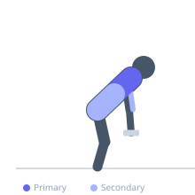
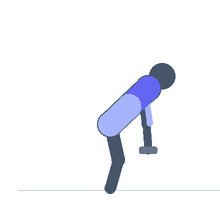

Exercise guide / Kroc Row
Kroc Row
The Kroc Row is a heavy, high-repetition unilateral dumbbell row popularized by powerlifter Janae Marie Kroc. Unlike a strict dumbbell row, controlled body rotation is intentionally used on the concentric phase to allow heavier loading and more complete lat contraction, while the eccentric remains deliberate. The result is a unique combination of raw back strength and muscular endurance that bridges bodybuilding and strength sport.
Primary muscles
latissimus dorsi
rhomboid major
Secondary muscles
biceps brachii long head
trapezius upper
erector spinae
Stabilizers
internal oblique
transverse abdominis
Equipment
Dumbbell (Fixed)
Optional
Lifting Straps


Starting position
- Support one hand on a bench or rack. Hold a heavy dumbbell in the other hand, arm extended toward the floor. Stagger the feet for a stable base.
Setup
- Select a heavier dumbbell than you would use for a strict row — the controlled cheat on the concentric allows for greater load. Use lifting straps to remove grip as the limiting factor.
Steps
- Step 1: Begin with the dumbbell hanging at arm's length, non-working hand on support.
- Step 2: Initiate a controlled pull by driving the elbow upward and back.
- Step 3: Allow the torso to rotate slightly toward the working side to maximize lat contraction at the top.
- Step 4: At peak contraction, the elbow is well above the torso and the lat is fully shortened.
- Step 5: Lower the dumbbell under strict control — the eccentric should be deliberate and slow.
Coaching cues
- Use the torso rotation to your advantage
- Slow it down on the way down
- Straps on — grip is not the target here
Breathing
- Exhale forcefully on the row, inhale on the descent.
Range of motion
- Full arm extension at the bottom, elbow driven well above the torso at the top.
Tempo
- 1-0-3-0 (explosive concentric, 3s eccentric)
Common mistakes
- Using so much body swing that the row becomes a deadlift rather than a back exercise
- Rushing the eccentric — the slow descent is critical to the exercise's effectiveness
- Not using straps, allowing grip to limit the target muscle's training
Safety
- The controlled cheat on the concentric is intentional, but should not degrade into uncontrolled momentum
- High rep sets with heavy weight create significant fatigue — use a spotter or rack for safety
Training
- strength: 10–20 reps
- hypertrophy: 15–25 reps
- strength: 2–3 sets
- hypertrophy: 2–3 sets
- Rest: {'strength': 180, 'hypertrophy': 120}